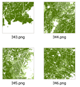

Using TileCache on IIS¶
- date:
2010-07-04 14:43
- author:
admin
- category:
mapserver, python, wms
- tags:
iis, PyISAPIe, tilecache
- slug:
using-tilecache-on-iis
- status:
published
I’ve previously written about using PyISAPie to run Python under IIS ?” this allows Python scripts to run faster than using CGI. Rather than starting up the Python interpreter each time a request is made to the web server, PyISAPIe starts the interpreter once and only needs to run the script at each request.
TileCache provides a Python-based WMS-C/TMS server - this is allows you create a local disk-based cache of any WMS server (in my case MapServer), and then connect to it through a WMS-C client such as OpenLayers. Using a cache means that rather than have MapServer create an image for every single request for a tile, the first time a tile is requested the image is saved in a folder on the server. On all subsequent requests for the same data TileCache can retrieve this file without needing MapServer. Performance increase is incredible - however watch out for filling up disk space, and remember to empty the cache if you change symbology or update your data.
As mod_python is now officially dead (and has been moved in Apache’s attic), it is yet another reason if you are using Windows servers to run everything through IIS rather than the rather clumsy Apache on Windows. Why pay for Windows, and then install a web server port, thereby losing all the tools, security, and utilities within Windows to manage and administer the web server?
The aim of this post is to describe the set up of TileCache, running through IIS.
Step 1
Install and configure PyISAPIe
Step 2
Place the following script in an application on IIS - http://bitbucket.org/geographika/mapserver-scripts/src/tip/tilecache/tilecache.py. Set this script to be handled by PyISAPIe as described in the link in Step 1.
In the script update the following line to point to your root MapServer WMS URL. MapServer itself can also run well under IIS.
[python]wms_url = ‘http://geographika.azurewebsites.net/mapserver/mapserv.exe?’[/python]
A few caveats related to this script:
the resolutions are hard-coded to the Mercator resolutions used by Google Maps, Bing Maps, OpenStreetMap etc.
the SRS is coded to EPSG:3785 which is the equivalent of EPSG:900913 ?” the “Google” Mercator projection. I believe the code has changed again, but in any case it can be set by changing the script
parsing of the query string sent to the server is done using the Python CGI module. There are newer modules to handle query strings, but these may not be compatible with TileCache which is works with Python 2.5? and 2.6 (I’ve not tried with newer versions)
Step 3
Some minor alterations need to be made to the TileCache scripts themselves, otherwise the following errors will occur:
[python]
str(Val)) | ImportError: [Loading ‘\\?\c:\inetpub\wwwroot\tilecache\tilecache.py’] ‘module’ object has no attribute ‘argv’ | [/python]
This is due to the following lines in the service.py file:
os.path.dirname(sys.argv[0]))) | cfgfiles = (os.path.join(workingdir, “tilecache.cfg”), os.path.join(workingdir,”..”,”tilecache.cfg”)) | else: | cfgfiles = (“/etc/tilecache.cfg”, os.path.join(“..”, “tilecache.cfg”), “tilecache.cfg”) | [/python]
It should be commented out, leaving only the last line as follows:
os.path.dirname(sys.argv[0]))) | # ? cfgfiles = (os.path.join(workingdir, “tilecache.cfg”), os.path.join(workingdir,”..”,”tilecache.cfg”)) | #else: | cfgfiles = (“/etc/tilecache.cfg”, os.path.join(“..”, “tilecache.cfg”), “tilecache.cfg”) | [/python]
The TileCache set up should now be complete. You can point your OpenLayers WMS tiles to the TileCache URL, and parameters will be passed onto TileCache, which in turn will check its cache and return an image, or call MapServer to request that a new image is generated.
Please let me know of any steps missed or errors encountered and I can update the post and script accordingly.
- orphan:
Comments¶
1. Janey **
Can you explain IEnumerator??? I’m getting an error when trying to use it.
Reply2. Janey **
I’m having trouble with the CTypes also. It seems like this code is for VB.net not VBA/VB6. Do you have a conversion??? It would help me out a lot! I’m trying to modify it to do a few things with a table that I’m adding to an ArcMap document. Thanks!!
Reply3. geographika **
Hi,
can be seen at http://edndoc.esri.com/arcobjects/8.3/ComponentHelp/esriCore/DataStatistics_Example.htm | Hope that helps!
ReplyAdd Comment